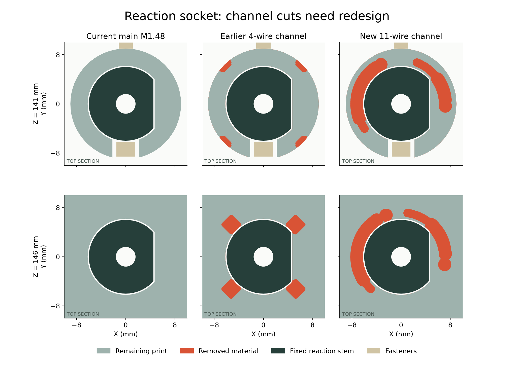

集中穿颈会损伤固定座，通道需要重做
这两种通道均未采用。 新的 11 线方案虽通过局部线路筛查，但会切穿反力固定座的孔壁。补查发现，之前的四线候选在固定座顶部也有同类问题。主模型和正式打印文件没有带入这些通道。

灰绿是保留的打印材料，深绿是固定反力轴，红色是通道移除的材料。点击查看大图。固定座顶部原孔壁被局部切开，不能仅依据导线间隙检查放行。
| 检查对象 | 本轮结果 |
|---|
| 11 根局部路线 | 130 姿态及线间检查通过；仅上下临时截面之间，未接至所有接口。4 根按 0.6604 mm，另 7 根按 1.4224 mm 预留，后者尚未选型。 |
| 新通道的支座 | BLOCKED：反力固定座部分孔壁被切穿，且出现两个微小悬空残片。 |
| 之前的四线通道 | BLOCKED：此次补查发现固定座顶部也有孔壁开口。此前路线与轴颈的检查结果不能替代本项。 |
| 轴承轴颈 | 采样最薄壁：原件 2.25 mm、四线 1.48 mm、11 线 1.68 mm。该局部结果不解决固定座问题，也不证明强度。 |
| 外绕第一轮 | 保留中心 R18 内的原始材料后，288 条局部候选仍未通过，主要碰到防脱压板，另有电源板冲突。仅这两组曲线族失败。 |
接下来要完成什么
分开通道，把转动余量段放到防脱压板上方；先保护固定座和轴承支撑，再完成端部连接、固定、带线装配和供应商制作图。目前没有可直接应用的通道候选。
到货前的剩余工作仍为五类：完整线束、反力夹初装、未定采购件及安装、厂家接口资料、最终质量与驱动复核。部分工作依赖厂家或硬件输入；还不是只等实物验证。
完整范围与命令本轮状态11 线支座四线支座补查外绕筛查来源与交付核对全部剩余工作
PROTOTYPE / UNVALIDATED · 主模型 M1.48、STL 和装配视频保持；无制造或采购放行。